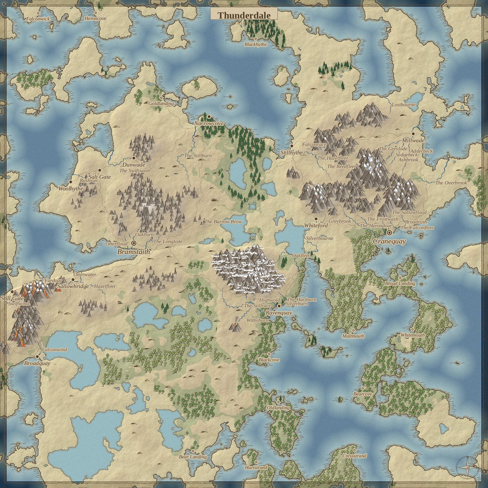
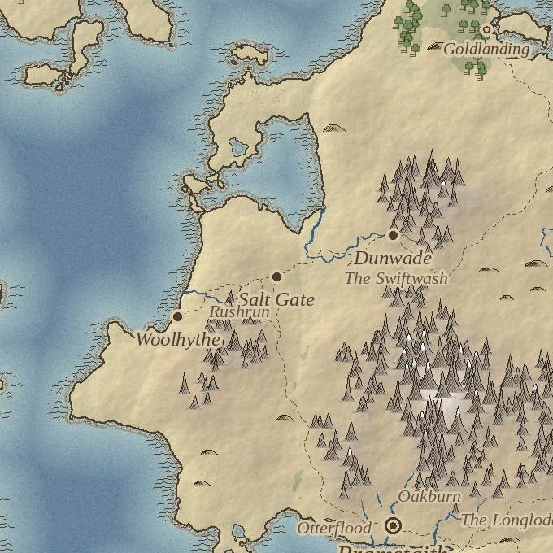

Living Legends is a role-playing game that runs on the D&D 5e rules, from the open SRD. You play it by talking: you say what you want to do, a character answers, and something in the world moves. There is no human dungeon master.
The interesting part is what decides that movement.
The rule everything else follows
The rules engine decides. The language model only narrates.
Every roll, every shift in how far a character trusts you, every secret they let go of is computed in code. The model receives the outcome along with a list of what it is allowed to say and what it is not. It writes the prose and nothing else. It cannot invent a fact, soften a failed roll, or hand you a secret you did not earn.
That constraint costs some flexibility and buys the thing I actually want: the mechanics replay exactly from a seed. The same seed and the same inputs produce the same outcomes, every time.
Characters, and what they will not tell you
Nobody in the world is scripted. Each character is assembled from tags — STUBBORN, INNKEEPER, PROTECT_LOVED_ONES — and every tag carries both behaviour for the narrator and a number for the engine, so a stubborn innkeeper is genuinely harder to persuade rather than just described that way.
Secrets sit behind checks that get harder the deeper they go, and trust makes them easier. The disposition ladder runs eight steps from hostile to helpful, and where somebody sits on it changes the difficulty of what you are trying.
Pushing the same angle twice is a mistake the engine notices. Each repeat of the same check makes the next roll 2 points harder and costs a step of trust. Grinding a conversation is the one strategy the design refuses.
The world builds itself
A world starts as a heightmap that becomes continents. Rivers begin in the snowfields and join on their way to the sea. The number of towns comes from how much land there is, at roughly the population density of England around 1300, and each is sized by rank. Roads avoid climbing where they can, merge when they are heading for the same place, and where three of them cross, a town grows at the junction.

Thunderdale, one generated world: 26 places — 2 cities, 11 towns, 13 market towns — holding 53,170 people.

Salt Gate grew where three roads meet. Nobody placed it there; the road routing did.
You can explore that map — hover a town for its name, click it for its population and the roads that reach it.
How the map gets drawn
The map used to draw itself in code: every mountain, tree and town was ink laid down by hand-written strokes and hatching. It worked, and it was a great deal of code for what is, in the end, a set of symbols stamped on paper.
So the map now stamps symbols. I asked Claude for sprite sheets and got back 35 of them — 13 settlements, 12 kinds of terrain, 10 trees — and a pipeline turns those SVGs into 360 PNGs with paper masks, warped copies so no two are identical, and snow added per summit.

The settlement symbols are typed — a capital, a port city, a crossroads town, a lake trade hub — because the generator already knows what kind of place it is putting down.

The same seed both ways. The old drawing code on the left, sprites on the right.
Everything is stamped in one pass, ordered by the bottom edge of each symbol, so whatever stands lower on the map is drawn last. It is a small difference per tree and a large one per wood.

Sprites are how the map draws now. The old renderer is still there behind an environment variable, because two years of maps were made with it.
Two agents build it
Most of the day-to-day work is done by two AI agents with jobs that never overlap.
A playtester runs on a local model on my own machine. It plays the game unattended — talking to characters, making checks, getting into fights — and writes down every place it got stuck or confused.
A fixer, which is Claude Code, works through those notes one at a time and turns each into a change with a test, on its own branch.
The playtester never touches the code and the fixer never plays, so neither one gets to judge its own work. Merging into the main line is my job. Since March that has added up to about 1,863 commits and 808 test files.
The scope, on purpose
A world generator will happily make a continent, and a continent is the wrong thing to build first. The target is one town of about a thousand people and the land around it, playable end to end: its 41 trades, its 60 named residents, and the reasons they will or will not talk to you.
Everything above exists to make that town worth standing in.